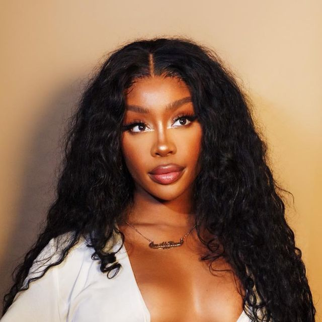
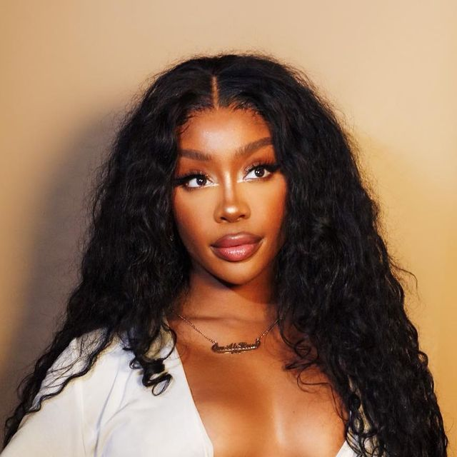

SZA
TORY LANEZ

PND

SZA
TORY LANEZ
PND
For SZA, her music is known for its emotional depth, introspective lyrics, and ethereal, melodic delivery. Her song is explore the complexities of love, heartbreak and vulnerability. I legit think that woman has not gotten over that nigga that broke up with her after 11 years of being together, damn.
Oh, Tory Lanez will always have my heart.He is one versatile artist i don't about and his versatility makes him unique. He's too good, too bad he is in jail rn.#freetory#
PND's music is like sunset to me...so beautiful. I cannot wait to go to that nigga's concert, imma scream my lungs out trust. His music often feels like a late night vibe where you just wanna chill and feel the mood.